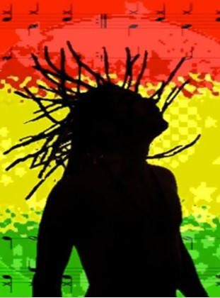

Reggae Music
What is Reggae music?
Reggae is a music genre that originated in Jamaica in the late 1960s, characterized by a distinctive syncopated rhythm, often featuring a heavy backbeat played by the drums and guitar on the offbeats. It evolved from earlier Jamaican genres like ska and rocksteady and was heavily influenced by American jazz and rhythm and blues. Reggae often has spiritual and political lyrical themes, with Bob Marley being its most famous global proponent, and is deeply connected to the Rastafarian religion.
A Brief History of Reggae Music
Since the late 1960s, reggae has been the primary popular style of music in Jamaica. Its origins reflect the cultural hybridity for which the Caribbean is known. Reggae’s roots trace back to the late 1940s and 1950s when the Jamaican recording industry was in its infancy. Mento—a rural-based music that developed from the period of slavery and which came to be influenced by Trinidadian calypso in the urban context of Kingston, was then the popular music. By the late fifties, a new style known as ska burst onto the urban scene.
As anthropologist Ken Bilby tells it, “Ska was born when urban Jamaican musicians began to play North American rhythm and blues, a style that had penetrated the island via imported records and radio broadcasts from Miami and other parts of the southern United States.”Reggae music entered the scene in 1968, retaining the basic rhythmic structures of the popular styles that preceded it. This included the syncopated snare drum and hi-hat pulse of ska, the swaying guitar and bass interplay of rocksteady, along with the continuing influence of mento and the Nyahbinghi drumming tradition. Reggae riddims—with their emphasis on the downbeat on two and four—evolved from the signature “one drop” style mastered by Carleton Barrett, drummer for the Bob Marley and the Wailers, to “rockers”—a rhythm most identified with the drumming duo of Dunbar and Robbie Shakespeare—to “steppers,” another evolution in the reggae beat.